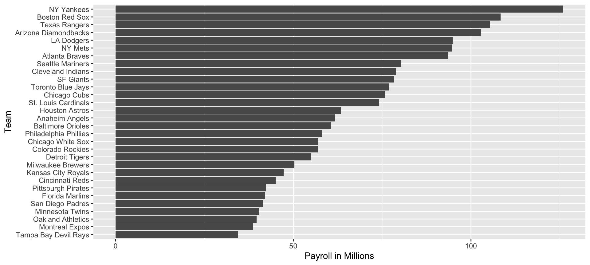
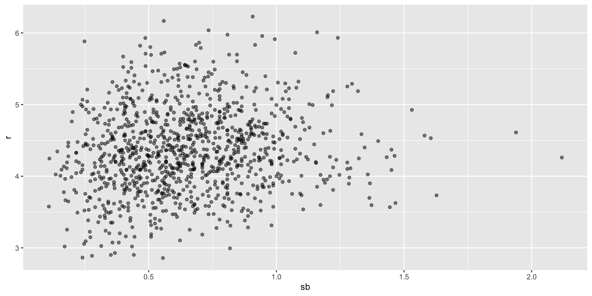
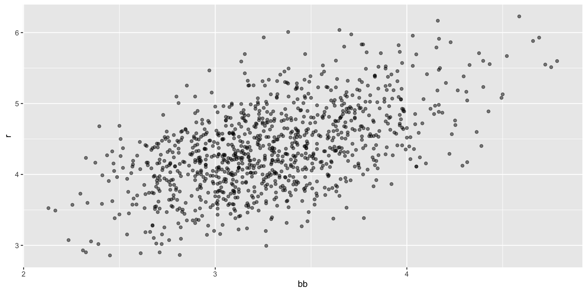
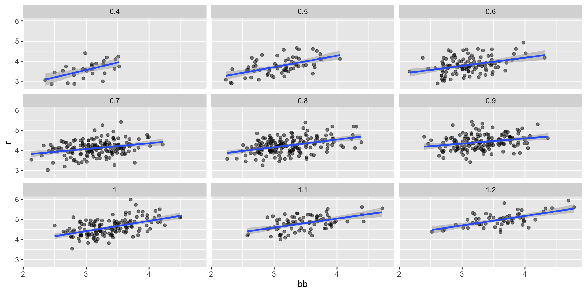
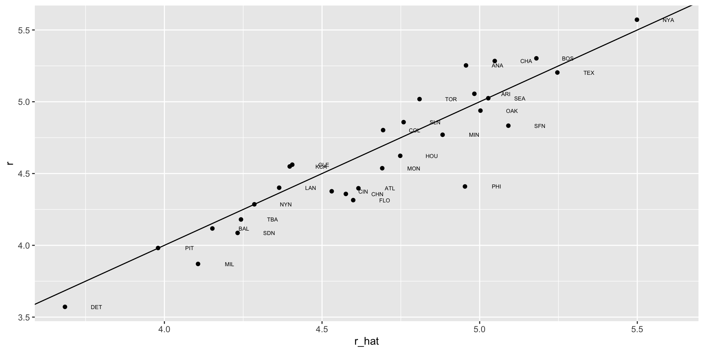
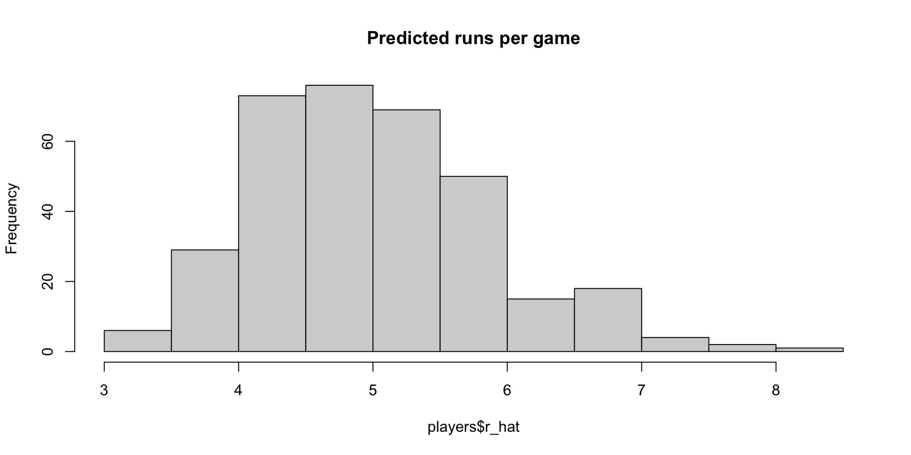

Multivariate Regression
2024-11-12
Multivariate Regression
Since Galton’s original development, regression has become one of the most widely used tools in data analysis.
One reason is the fact that an adaptation of the original regression approach, based on linear models, permits us to find relationships between two variables taking into account the effects of other variables that affect both.
This has been particularly popular in fields where randomized experiments are hard to run, such as economics and epidemiology.
Multivariate Regression
When we are unable to randomly assign each individual to a treatment or control group, confounding becomes particularly prevalent.
For instance, consider estimating the effect of eating fast foods on life expectancy using data collected from a random sample of people in a jurisdiction.
Fast food consumers are more likely to be smokers, drinkers, and have lower incomes.
Consequently, a naive regression model may lead to an overestimate of the negative health effects of fast food.
Multivariate Regression
So, how do we account for confounding in practice?
Today we learn how multivariate regression can help with such situations and can be used to describe how one or more variables affect an outcome variable.
We illustrate with a real-world example in which data was used to help pick underappreciated players to improve a resource limited sports team.
Case study: Moneyball

Moneyball

Moneyball

Case study: Moneyball
Examples
Here is a video showing a success: https://www.youtube.com/watch?v=HL-XjMCPfio.
And here is one showing a failure: https://www.youtube.com/watch?v=NeloljCx-1g.
Baseball basics

Baseball basics
Bases on balls (BB): The pitcher fails to throw the ball through a predefined area considered to be hittable (the strike zone), so the batter is permitted to go to first base.
Single: The batter hits the ball and gets to first base.
Double (2B): The batter hits the ball and gets to second base.
Triple (3B): The batter hits the ball and gets to third base.
Home Run (HR): The batter hits the ball and goes all the way home and scores a run.
Baseball basics
- Here is an example of a HR: https://www.youtube.com/watch?v=xYxSZJ9GZ-w.
Baseball basics
Here is an example of a stolen base: https://www.youtube.com/watch?v=JSE5kfxkzfk.
All these events are tracked throughout the season and are available to us through the Lahman package.
Now, we can begin discussing how data analysis can help us determine how to use these statistics to evaluate players.
No awards for base on balls

Base on balls or stolen bases?
Base on balls or stolen bases?
- Now let’s start with a obvious question: do teams that hit more home runs score more runs? When exploring the relationship between two variables, The visualization of choice is a scatterplot:
Base on balls or stolen bases?
Base on balls or stolen bases?
Base on balls or stolen bases?
- But does this mean that increasing a team’s BBs causes an increase in runs?
Regression applied to baseball
- Can we use regression with these data?
Regression applied to baseball
- Now we are ready to use linear regression to predict the number of runs a team will score, if we know how many home runs the team hits using regression:
Regression applied to baseball
In ggplot we can do this:
The broom package
# A tibble: 2 × 7
term estimate std.error statistic p.value conf.low conf.high
<chr> <dbl> <dbl> <dbl> <dbl> <dbl> <dbl>
1 (Intercept) 1.93 0.116 16.7 1.91e-55 1.70 2.15
2 bb 0.739 0.0348 21.2 1.90e-83 0.671 0.807- The other functions provided by broom,
glanceandaugment, relate to model-specific and observation-specific outcomes, respectively.
Confounding
Previously, we noted a strong relationship between Runs and BB.
If we find the regression line for predicting runs from bases on balls, we a get slope of:
Confounding
The data does provide strong evidence that a team with two more BB per game than the average team, scores 1.5 runs per game.
But this does not mean that BB are the cause.
Confounding
- Note that, if we compute the regression line slope for singles, we get:
Confounding
- Here we show the correlation between HR, BB, and singles:
Confounding
- A first approach is to keep HRs fixed at a certain value and then examine the relationship between BB and runs.
Confounding
Confounding
- Once we stratify by HR, these slopes are substantially reduced:
dat |> mutate(hr_strata = round(hr, 1)) |>
filter(hr_strata >= 0.5 & hr_strata <= 1.2) |>
group_by(hr_strata) |>
reframe(tidy(lm(r ~ bb))) |>
filter(term == "bb") # A tibble: 8 × 6
hr_strata term estimate std.error statistic p.value
<dbl> <chr> <dbl> <dbl> <dbl> <dbl>
1 0.5 bb 0.566 0.110 5.14 3.02e- 6
2 0.6 bb 0.405 0.0984 4.12 7.46e- 5
3 0.7 bb 0.284 0.0717 3.96 1.13e- 4
4 0.8 bb 0.378 0.0638 5.92 1.75e- 8
5 0.9 bb 0.254 0.0762 3.33 1.08e- 3
6 1 bb 0.506 0.0720 7.02 9.46e-11
7 1.1 bb 0.444 0.0878 5.06 2.77e- 6
8 1.2 bb 0.469 0.0804 5.84 2.91e- 7Counfounding
dat |> mutate(bb_strata = round(bb, 1)) |>
filter(bb_strata >= 3 & bb_strata <= 4) |>
group_by(bb_strata) |>
reframe(tidy(lm(r ~ hr))) |>
filter(term == "hr") # A tibble: 11 × 6
bb_strata term estimate std.error statistic p.value
<dbl> <chr> <dbl> <dbl> <dbl> <dbl>
1 3 hr 1.51 0.182 8.31 1.47e-12
2 3.1 hr 1.49 0.168 8.87 3.10e-14
3 3.2 hr 1.61 0.150 10.8 6.96e-18
4 3.3 hr 1.57 0.167 9.39 5.73e-15
5 3.4 hr 1.55 0.153 10.1 3.77e-16
6 3.5 hr 1.64 0.174 9.43 4.96e-14
7 3.6 hr 1.78 0.197 8.99 6.68e-13
8 3.7 hr 1.47 0.196 7.50 6.37e-10
9 3.8 hr 1.66 0.202 8.24 9.64e-11
10 3.9 hr 1.29 0.289 4.45 1.15e- 4
11 4 hr 1.36 0.218 6.27 4.38e- 7Multivariable regression
It is somewhat complex to be computing regression lines for each strata.
We are essentially fitting models like this:
\[ \mbox{E}[R \mid BB = x_1, \, HR = x_2] = \beta_0 + \beta_1(x_2) x_1 + \beta_2(x_1) x_2 \]
with the slopes for \(x_1\) changing for different values of \(x_2\) and vice versa.
But is there an easier approach?
Multivariable regression
If we take random variability into account, the slopes in the strata don’t appear to change much.
If these slopes are in fact the same, this implies that \(\beta_1(x_2)\) and \(\beta_2(x_1)\) are constants.
This, in turn, implies that the expectation of runs conditioned on HR and BB can be written as follows:
\[ \mbox{E}[R \mid BB = x_1, \, HR = x_2] = \beta_0 + \beta_1 x_1 + \beta_2 x_2 \]
Multivariable regression
This model suggests that, if the number of HR is fixed at \(x_2\), we observe a linear relationship between runs and BB with an intercept of \(\beta_0 + \beta_2 x_2\).
Our exploratory data analysis suggested that this is the case.
The model also suggests that as the number of HR grows, the intercept growth is linear as well and determined by \(\beta_1\).
In this analysis, referred to as multivariable regression, you will often hear people say that the BB slope \(\beta_1\) is adjusted for the HR effect.
Multivariable regression
- Because the data is approximately normal and conditional distributions were also normal, we are justified in using a linear model:
\[ Y_i = \beta_0 + \beta_1 x_{i,1} + \beta_2 x_{i,2} + \varepsilon_i \]
- with \(Y_i\) runs per game for team \(i\), \(x_{i,1}\) walks per game, and \(x_{i,2}\).
Multivariable regression
To use
lmhere, we need to let the function know we have two predictor variables.We therefore use the
+symbol as follows:
# A tibble: 3 × 7
term estimate std.error statistic p.value conf.low conf.high
<chr> <dbl> <dbl> <dbl> <dbl> <dbl> <dbl>
1 (Intercept) 1.74 0.0820 21.2 3.38e- 83 1.58 1.90
2 bb 0.387 0.0269 14.4 8.41e- 43 0.334 0.440
3 hr 1.57 0.0488 32.1 1.39e-157 1.47 1.66 Multivariable regression
When we fit the model with only one variable, the estimated slopes were 0.74 and 1.85 for BB and HR, respectively.
Note that when fitting the multivariable model both go down, with the BB effect decreasing much more.
Building a baseball team
\[ Y_i = \beta_0 + \beta_1 x_{i,1} + \beta_2 x_{i,2} + \beta_3 x_{i,3}+ \beta_4 x_{i,4} + \beta_5 x_{i,5} + \varepsilon_i \]
- with \(x_{i,1}, x_{i,2}, x_{i,3}, x_{i,4}, x_{i,5}\) representing BB, singles, doubles, triples, and HR respectively.
Building a baseball team
- Using
lm, we can quickly find the LSE for the parameters using:
Building a baseball team
- We can see the coefficients using
tidy:
# A tibble: 5 × 7
term estimate std.error statistic p.value conf.low conf.high
<chr> <dbl> <dbl> <dbl> <dbl> <dbl> <dbl>
1 bb 0.370 0.0119 31.2 1.00e-149 0.347 0.393
2 singles 0.517 0.0128 40.5 5.29e-213 0.492 0.543
3 doubles 0.775 0.0229 33.8 7.09e-168 0.730 0.820
4 triples 1.24 0.0778 15.9 4.62e- 51 1.09 1.39
5 hr 1.44 0.0248 58.1 1.98e-323 1.39 1.49 Building a baseball team
- To see how well our metric actually predicts runs, we can predict the number of runs for each team in 2002 using the function
predict, then make a plot:
Building a baseball team
Building a baseball team
The formula would look like this: -2.76 + 0.37 \(\times\) BB + 0.52 \(\times\) singles + 0.78 \(\times\) doubles + 1.24 \(\times\) triples + 1.44 \(\times\) HR.
To define a player-specific metric, we have a bit more work to do.
Building a baseball team
Building a baseball team
players <- Batting |>
filter(yearID %in% 1997:2001) |>
group_by(playerID) |>
mutate(pa = BB + AB) |>
summarize(g = sum(pa)/pa_per_game,
bb = sum(BB)/g,
singles = sum(H - X2B - X3B - HR)/g,
doubles = sum(X2B)/g,
triples = sum(X3B)/g,
hr = sum(HR)/g,
avg = sum(H)/sum(AB),
pa = sum(pa)) |>
filter(pa >= 1000) |>
select(-g)
players$r_hat = predict(fit, newdata = players) Building a baseball team
Building a baseball team
Building a baseball team
Building a baseball team
position_names <-
paste0("G_", c("p","c","1b","2b","3b","ss","lf","cf","rf", "dh"))
tmp <- Appearances |>
filter(yearID == 2002) |>
group_by(playerID) |>
summarize_at(position_names, sum) |>
ungroup()
pos <- tmp |>
select(all_of(position_names)) |>
apply(X = _, 1, which.max)
players <- tibble(playerID = tmp$playerID, POS = position_names[pos]) |>
mutate(POS = str_to_upper(str_remove(POS, "G_"))) |>
filter(POS != "P") |>
right_join(players, by = "playerID") |>
filter(!is.na(POS) & !is.na(salary)) Building a baseball team
Building a baseball team
- If you are a baseball fan, you will recognize the top 10 players:
nameFirst nameLast POS salary r_hat
1 Barry Bonds LF 15000000 8.052460
2 Larry Walker RF 12666667 7.960583
3 Todd Helton 1B 5000000 7.403074
4 Manny Ramirez LF 15462727 7.352475
5 Sammy Sosa RF 15000000 7.201670
6 Jeff Bagwell 1B 11000000 7.053805
7 Mike Piazza C 10571429 6.993616
8 Jason Giambi 1B 10428571 6.916405
9 Edgar Martinez DH 7086668 6.912145
10 Jim Thome 1B 8000000 6.885270Building a baseball team
| nameFirst | nameLast | POS | salary | r_hat |
|---|---|---|---|---|
| Todd | Helton | 1B | 5000000 | 7.403073 |
| Mike | Piazza | C | 10571429 | 6.993616 |
| Edgar | Martinez | DH | 7086668 | 6.912145 |
| Jim | Edmonds | CF | 7333333 | 6.231373 |
| Jeff | Kent | 2B | 6000000 | 6.079064 |
| Phil | Nevin | 3B | 2600000 | 5.857409 |
| Matt | Stairs | RF | 500000 | 5.758631 |
| Henry | Rodriguez | LF | 300000 | 5.640563 |
| John | Valentin | SS | 550000 | 5.000417 |
Building a baseball team
| nameLast | bb | singles | doubles | triples | hr | avg | r_hat |
|---|---|---|---|---|---|---|---|
| Helton | 0.91 | -0.21 | 2.65 | -0.31 | 1.52 | 2.67 | 2.54 |
| Piazza | 0.33 | 0.42 | 0.20 | -1.42 | 1.83 | 2.20 | 2.09 |
| Martinez | 2.14 | -0.01 | 1.26 | -1.22 | 0.81 | 2.20 | 2.00 |
| Edmonds | 1.07 | -0.56 | 0.79 | -1.15 | 0.97 | 0.85 | 1.26 |
| Kent | 0.23 | -0.73 | 2.01 | 0.45 | 0.77 | 0.79 | 1.09 |
| Nevin | 0.31 | -0.91 | 0.48 | -1.19 | 1.19 | 0.10 | 0.85 |
| Stairs | 1.10 | -1.51 | -0.05 | -1.13 | 1.12 | -0.56 | 0.74 |
| Rodriguez | 0.20 | -1.60 | 0.33 | -0.78 | 1.32 | -0.67 | 0.61 |
| Valentin | 0.18 | -0.93 | 1.79 | -0.43 | -0.05 | -0.47 | -0.09 |